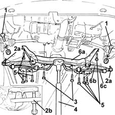
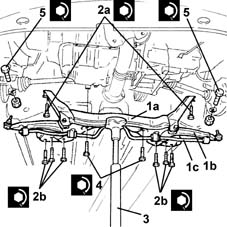

4410D13 front suspension beam - r r
- Path
- Procedures > 44 SUSPENSION AND WHEELS > 4410 FRONT SUSPENSION > 4410D frame and cross beam > 4410D13 front suspension beam - r r
- Kind
- repair procedure (removal / refitting; the operation number is the code)
- Applies to
- all engines; all production periods
- Interactive page
- https://sloeber94.github.io/elrnDB-lYpsln/en/#/2429238
Applies to: all engines; all production periods
 Removing
Removing
 Refitting
RefittingPosition the vehicle on the ramp.
Proceed with removal 4450B12 front or rear wheels (two) - r+r .
Applies to: engines: 1.2 8v, 1.2 16v, 1.4 16v; all production periods
Proceed with removal 1076B30 front exhaust silencer - r + r .
Applies to: engines: 1.3 JTD; all production periods
Proceed with removal 1076B40 CENTRE exhaust PIPE - R.R. .
Applies to: engines: 1.3 JTD; all production periods
Proceed with removal 1008C30 power unit lower reaction link r r .
1. Loosen the bolts fixing the lower track control arms to the steering knuckles.
2. Disconnect the lower track control arms (2a) from the steering knuckles using a suitable tool (2b).
3. Undo the bolts fixing the steering box to the front suspension crossmember.
4. Position a hydraulic jack under the front suspension crossmember.
5. Undo the bolts fixing the front suspension crossmember to the bodyshell.
6. Remove the front suspension crossmember (6a), complete with lower track control arms (6b) and anti-roll bar (6c), lowering the hydraulic jack.

Applies to: all engines; all production periods
Refitting
Removing1. Place the front suspension crossmember (1a), complete with lower track control arms (1b) and anti-roll bar (1c), back in its housing using the hydraulic jack.
2. Tighten the bolts (2a) and (2b) fixing the front suspension crossmember to the bodyshell to the recommended torque.
 | Fastening | Component | Ø | Value (daNm) |
|---|---|---|---|---|
2a | Side bolt | ENGINE OR ROD ANCHORAGE BEAM | M12 | (Bodyshell side) 10.5 ÷11.6 |
| Fastening | Component | Ø | Value (daNm) |
|---|---|---|---|---|
2b | Rear bolt | ENGINE OR ROD ANCHORAGE BEAM | M12 | (Bodyshell side) 11.4 ÷ 12.6 |
3. Remove the hydraulic jack from underneath the front suspension crossmember.
4. Tighten the bolts fixing the power steering box to the front suspension crossmember to the recommended torque.
| Fastening | Component | Ø | Value (daNm) |
|---|---|---|---|---|
4 | Bolt | STEERING BOX (RACK AND PINION) | M12 | (Front suspension crossmember side) 6.7 ÷ 7.4 |
5. Connect the lower track control arms to the steering knuckles and tighten the bolts to the recommended torque.
| Fastening | Component | Ø | Value (daNm) |
|---|---|---|---|---|
5 | Bolt | FRONT SUSPENSION LOWER LEVER | M10 | (Hub steering knuckle side) 5.9 ÷ 7.2 |

Applies to: all engines; all production periods
Proceed with refitting 1008C30 power unit lower reaction link r r .
Applies to: engines: 1.3 JTD; all production periods
Proceed with refitting 1076B40 CENTRE exhaust PIPE - R.R. .
Applies to: engines: 1.2 8v, 1.2 16v, 1.4 16v; all production periods
Proceed with refitting 1076B30 front exhaust silencer - r + r .
Applies to: engines: 1.2 8v, 1.2 16v, 1.4 16v; all production periods
Proceed with refitting 4450B12 front or rear wheels (two) - r+r .
Remove the car from the ramps.